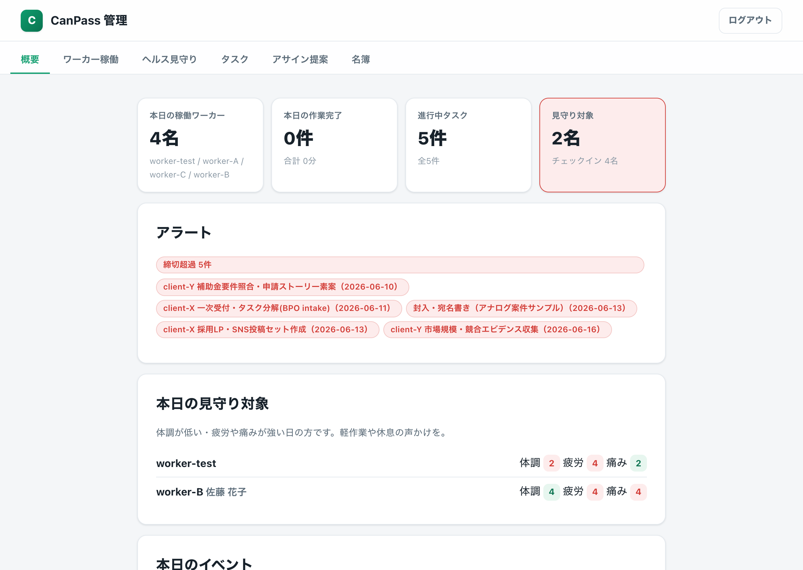
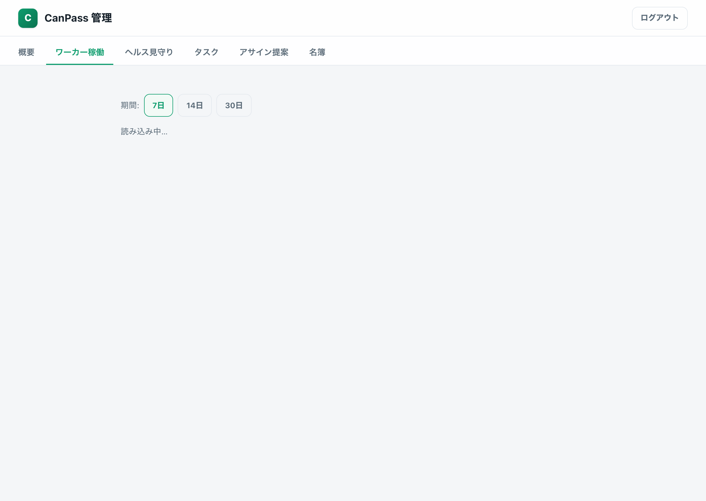
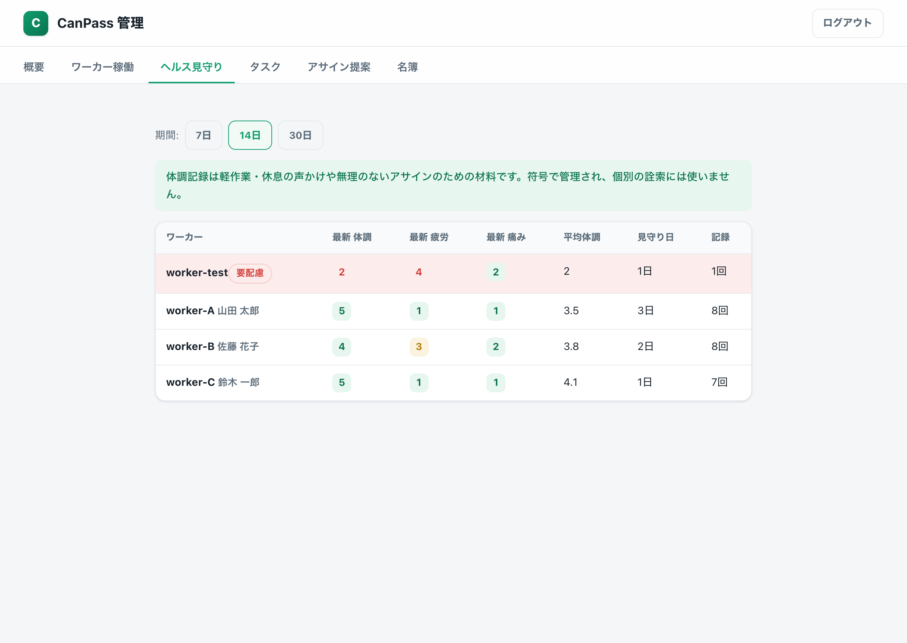
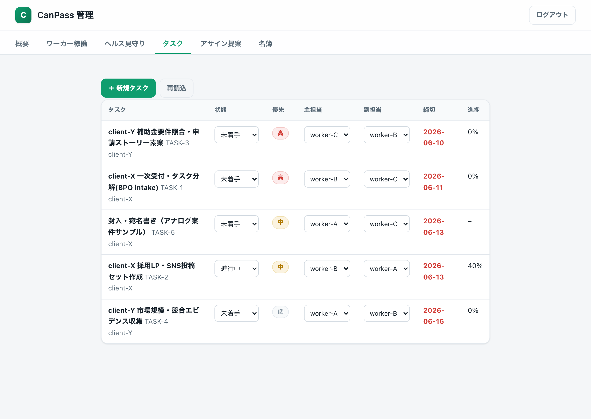
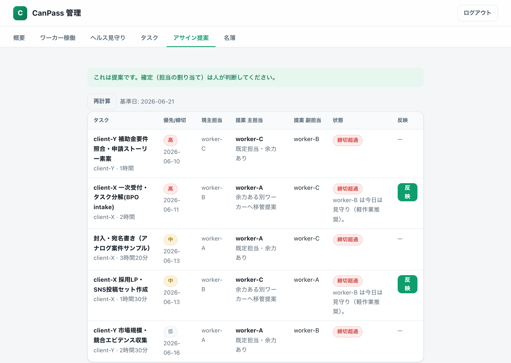
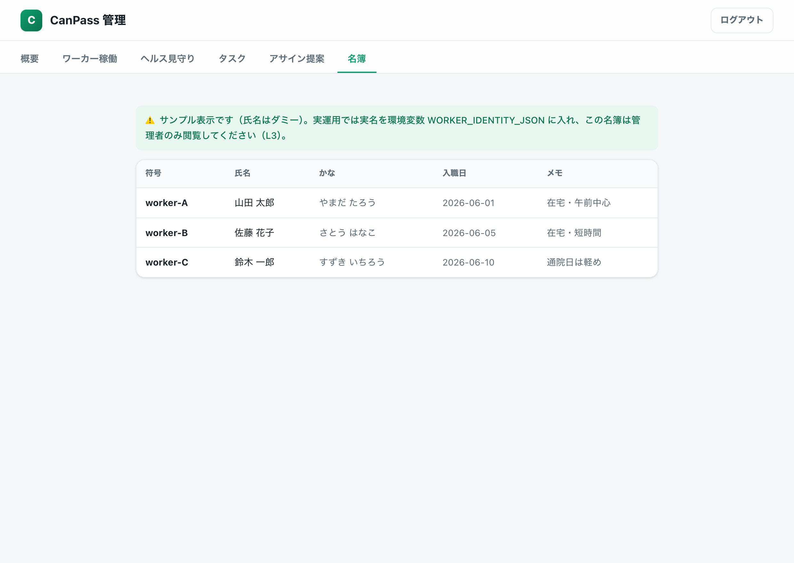

（別途共有） PW・管理者限定※ ワーカー用ログインとは別系統です。パスコードは経営者・PMにのみ共有します。PCでの利用を想定（スマホでも閲覧可）。
本日の稼働ワーカー数・作業完了・進行中タスク・見守り対象の人数をカードで表示。締切超過や未割当などのアラート、体調が低い人の見守りリストもここに出ます。

7／14／30日の期間で、ワーカー別の稼働日・ログイン・完了数・稼働時間・最新の体調/疲労をまとめます。符号の横に氏名（管理者のみ）も表示。

体調（高いほど良い）・疲労／痛み（高いほど注意）の最新値と平均、見守り日数を表示。軽作業や休息の声かけのための材料で、詮索のためのものではありません。

受託タスクの一覧。状態（未着手〜完了）・主担当／副担当をその場で変更でき、締切超過は赤で警告。新規タスクの起票もできます。1業務＝主＋副の冗長を保つ運用です。

受託タスク × 当日の稼働 × 体調 を掛け合わせ、当日の担当案を提示します。体調が低い人には軽め、余力のある人へ移管、副担当の欠けも検知。これは提案で、確定は人が判断します。

符号と実名の対応表。管理者だけがこの画面で参照できます。ワーカー側アプリ・各種ログ・公開物には実名は一切出ません（符号で運用）。下の画像はサンプル（氏名はダミー）です。
